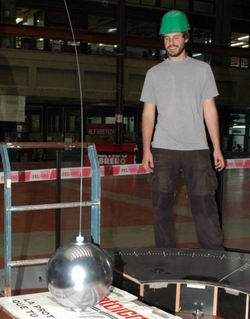

|
Péndulo de Foucault
Facultad de Ciencias Exactas y Naturales -
Ciclo Básico Común
Universidad de Buenos Aires
Annus Mirabilis 1905-2005
|
|
CRÉDITOS |
|
 |
| El péndulo de Foucault de Exactas fue construido con el apoyo de las siguientes dependencias: Secretaría de Extensión Graduados y Bienestar, Secretaría Técnica, Departamento de Química Inorgánica, Analítica y Química Física, Departamento de Física, Cátedra de Física del CBC; las siguientes empresas: Tenaris Siderca (provisión de acero), Alberto Ullua e Hijos SRL (tornería), Endilocrom SA (cromado) y Google Earth (imagen); y con el desinteresado esfuerzo de las siguientes personas: Guillermo Racciatti, Esteban Lanzarotti, Ernesto López, Jorge Alvarez Julia, Roberto Etchenique, Jorge Aliaga, Armando Doria, Eliseo Delfosse, Diego Weinberg, Francisco Nemiña, Emiliano Cabrera, Oscar Pacios, Daniela Coimbra, Pablo González, Cecilia Curutchet, Tomás Luppo, Víctor E. Esteve, María Celia Maniotti, Alan Bush (foto) y flia., Guillermo Mattei, Ricardo Cabrera y Jean Bertrand Léon Foucault. |
| |
| Última actualización oct-2006. |
|
|